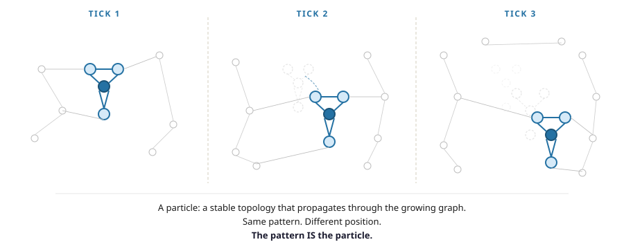
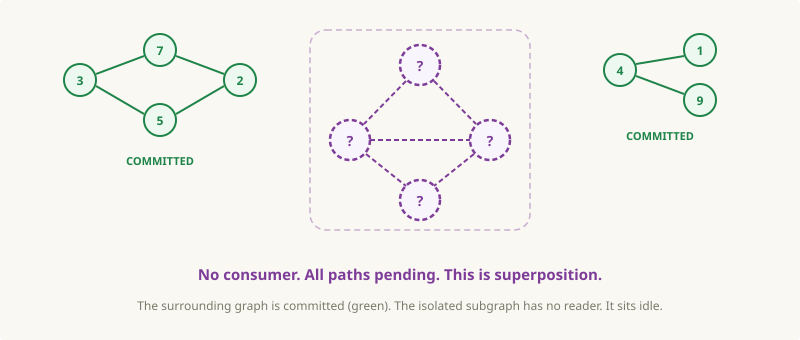
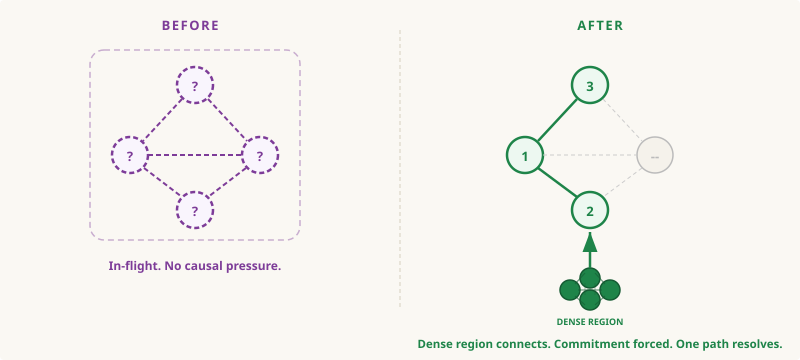
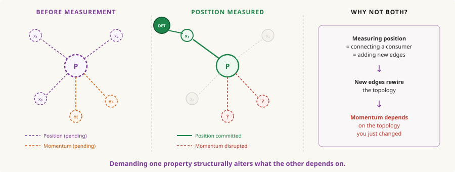
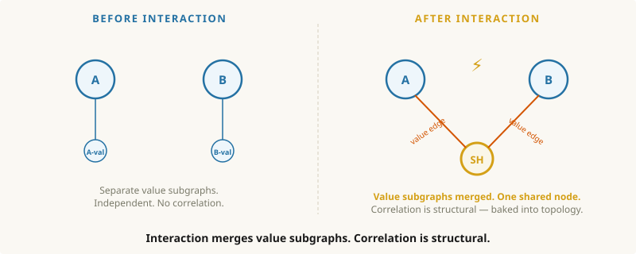
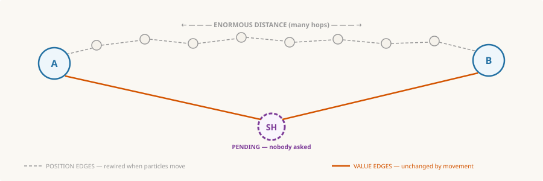
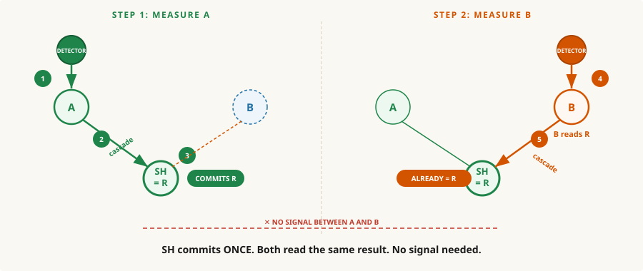
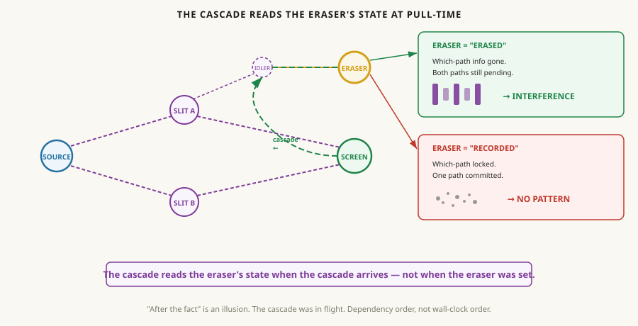

Front Matter
It is a curious thing to have a passion for a subject you can’t quite grasp. I would imagine this is all that is really needed for the seeds of AI psychosis to truly take hold.
What follows is something of a “hobby” of mine. On the surface might seem odd, to “ponder the world” as a hobby. But, I’d argue it’s actually a well-known fact that the best way to spend ANY amount of time on ANY amount of drugs is to sit back and go “YO BUT what IF LIKE…”
Most of what follows is aided with AI, but this is more or less the result of my “pondering”/ranting about for the last 8 or 9 years. So while the words are AI assisted, I assure you the delusions are entirely my own.
I have not figured out the exact number yet, but I imagine the odds of someone being committed rise significantly the moment they start uttering the words “I have a theory of the universe”.
So to try and get ahead of whoever it was that plotted to get Kanye, I’d like to spell out what this actually is.
This is my best guess on how it could all work. Do I think it’s right? I’d say the odds are as close to zero as something can be. However, if this somehow has any iota of a concept that inspires a thought in someone more capable, even if born out of pure opposition, then I’d consider that a win.
Most of what I describe below is things about our known universe that absolutely fascinate (scare the living fuck out of me). And I thought having it on the World Wide Web makes it easier for me to send as advance briefing for any family function or dinner party I should be expected to attend.
In a world where AI and and do almost everything I wanted one section that was just me.
Cheers,
A Very Serious Person
As we’ve developed this framework, what’s taken shape is fairly similar to causal set theory, loop quantum gravity, and Wolfram’s hypergraph project. The idea that spacetime might be discrete isn’t new — a lot of very smart people have been working on it for decades. Those guys BALL. What I think is different here is the specific synthesis: a causal graph where dense regions force commitment (solving the measurement problem) and topology alone carries all values. If this piques your interest, look at those projects for what is more likely to be the actual correct version of what I’m trying to say.
The Proposal
Everything that follows builds on one idea: reality is a causal graph that grows itself.
Five rules. That’s it.
- It’s a causal graph. Events connected by cause-and-effect. No cycles — effects can’t cause themselves.
- Changes propagate locally. No global controller. Changes ripple outward along connections, hop by hop, at a maximum rate C.
- Nothing commits until forced. No pressure? No definite result. Events stay in-flight with multiple possible outcomes.
- No stored values. Every value comes from the shape of the connections. Structure is the data.
- The graph grows. Committed events spawn new connections and new events. Growth is time.
The punchline: you only ever see the committed results. Never the propagation in progress. Everything in this document — gravity, time, quantum mechanics — is what this graph looks like from the committed side.
Chapter 1: You Are Mario
Before we get into anything — before graphs, before physics, how nerds run computers in the sky. I want to drive a point home.
You are Mario. Not metaphorically. Your reality is taking place on a screen. There is a structure underneath producing your world, and you have no direct access to it. Now there are worse things than life as an Italian 2D plumber — we’ll get to that in a minute. But stay with me for a second.
This might sound crazy, maybe confusing? But you deal with two-layer systems every day. Your monitor shows letters, your computer stores ones and zeros. Two layers: the committed structure and the output you experience. We’re — well I’m — claiming reality works the same way. What you experience is the committed output, but the real action is in the growing causal structure underneath. YOU and your reality are part of that structure. And more specifically, the universe seems to be stored as a graph.
So I lied. You are not a 2D Italian plumber, you are the committed output of a 2D Italian plumber’s causal history. See, it always can get worse.
Saying “it’s all a simulation” is not actually that new or novel. But what I want to add is a bit more on how I think the specifics of the architecture might look. And I want to show why this type of architecture would actually explain things. Things like:
- Why can’t you shield gravity?
- What is gravity? Why can’t you tell the difference between gravity and acceleration?
- Why can’t anything travel faster than the speed of light?
- Why does time slow down near a black hole?
- Why does the universe “know” what you’ll measure?
- Why do equations for physics work backwards in time?
- Is time travel possible?
- Is there any age at which a man can know for sure he won’t ever bald?
These are genuine unsolved mysteries and in my version of what’s going on, they all have the same answer. Well except the last one, that is an open question I’m asking for a friend.
The Committed Structure — the causal graph. Events connected by cause-and-effect. The actual fabric of reality. Think: the Nintendo console.
The Output — what you experience. Your “reality.” The committed results. Think: the TV screen.
The analogy is imperfect — reality is slightly more complicated than Mario, and this gets you about 80% of the way there. But it’s a useful starting lens.

Okay so real quick — a graph is dots connected by lines. A recipe is a graph. A family tree is a graph. That’s it.

Now our universe graph needs a few rules:
1. Demand-driven. Unless there’s causal pressure — some dense region demanding “what happened here?” — do nothing. Stay in-flight.
2. No stored values — all values come from how the graph is connected. Imagine someone asks you the time. You don’t actually know — you check your phone, which checks a satellite, which checks an atomic clock. The time depends on where you are in the graph. You always need to check.
3. Edges are operations — the lines connecting dots can be instructions. Like: (3) — × — (3) = 9.
One more thing: local propagation. Think dominos. You flick one, it knocks over the next, which knocks over the next. No one is standing above orchestrating which domino falls when — each one just reacts to its neighbor. Changes ripple outward, hop by hop, and the fastest they can ripple is the speed of light.
That’s it. Dominos, nerds in the sky with time, and a base rule of don’t commit unless pressured. Now let’s go make some graphic content and create the fucking universe...
Chapter 2: Run It
Here’s the key idea: changes propagate locally. No master controller. No global function orchestrating everything. Just events affecting their neighbors, who affect their neighbors, rippling outward.

So what just happened? A change committed at one event. Its immediate causal neighbors reacted — they had to, because the committed result changed their inputs. One hop later, their neighbors reacted. The change rippled outward through the graph. That’s one tick of local time for each layer that committed.
Now let me show you what fell out of that — because it’s kind of insane.
Time. Each new layer of committed events is one tick. Two layers = two moments passed. No new commitments = no time passes. Think about it: what would it look like if time stopped? Nothing would change. Nothing commits. Nothing grows. That’s literally what “time stopped” means — zero change. Time isn’t a river you float on. It’s the graph growing. New events being born.
And here’s the thing: the graph could pause between growth cycles for a billion years for all we know. Mario doesn’t notice. Hit pause, walk away, get lunch, come back — zero time passed for Mario. You only ever experience the committed result. Never the gap between.
The speed limit. Changes propagate hop by hop along causal edges. An event with nothing upstream to wait for — nothing that needs to commit before it can — commits at the maximum rate. One hop per tick. That rate is C. The speed of light. Everything else is slower because it has upstream causal work to finish first. A photon has no causal baggage. That’s why nothing travels faster than light — you can’t propagate faster than the graph itself grows.
Mass. A region of the graph whose topology doesn’t change. Same pattern of connections, same committed result, every time. A rock on a table keeps producing the same committed value because no new inputs are arriving. Stability. When that stability breaks — enough energy to rewire the connections — the delta propagates outward. That’s released energy.
And one more: demand-driven commitment. If there’s no causal pressure on an event — no dense region forcing it to commit — it stays in-flight. Multiple possible outcomes, all live, until something forces a resolution. That’s quantum superposition — and we’ll come back to it.
What IS a particle? A stable pattern — a specific topology of connections — that propagates through the growing graph. The pattern holds its shape as the graph grows around it. Same internal structure, new position. The pattern IS the particle. Not a thing moving through space — a topological shape maintaining itself through graph growth.

No physics. No special rules. Just: changes propagate locally through a growing graph. And we got something that looks like time (graph growth), a speed limit (maximum propagation rate), mass (stable topology), and demand-driven commitment (events that nobody pressured stay unresolved). All from local propagation.
A caveat before we go further: we don’t know the exact operations on the edges. We’re not claiming to have the specific rules that generate electrons or gravity constants. What we’re showing is that the structure of a locally-propagating causal graph — regardless of the specific operations — produces emergent properties that map onto physics. The shape of the argument matters more than the specific numbers.
Axiom A2 states the core rule: changes propagate along causal edges at maximum rate C. No global function, no central evaluator. Combined with demand-driven commitment (A3), no stored values (A4), and graph growth (A5), this produces all emergent properties observed above: time (D1), causal ordering (D2), causal density (D8), superposition (D16), and the maximum propagation rate.
The Proof of Concept: Primes From Topology
Watch what happens when a node’s value depends on its depth. Depth 2: leaf returns 1. Depth 3: new irreducible structure → 2 (prime). Depth 4: just recombines depth 2 → composite. Depth 5: another irreducible structure → 3 (prime).

The node stores nothing. The structure IS the value. This is illustrative, not a proof — but it shows that pure structure, with no stored values, can generate non-trivial mathematical objects. If topology can produce primes, the “no stored values” axiom isn’t as crazy as it sounds.
Local propagation through a growing causal graph — no physics, no special rules — and we got structures that look like time, a speed limit, mass, and quantum superposition. None of these were designed in. They fell out of the propagation. Changes rippled through the graph, and something that looks a lot like physics showed up uninvited.
Four properties. No physics. No special rules. Just: changes propagate locally through a growing graph. But here’s the thing — we’re not the first people to build systems like this.
Chapter 3: “Wait. This IS Spacetime.”
You Already Use This Model
We already build systems where changes propagate through dependency graphs. Spreadsheets, React, CPU caches — different teams, different decades, different purposes. They all independently converged on the same model: topological ordering. If two nodes have no dependency between them, they can update in any order. If one depends on the other, it must wait.
A spreadsheet is a graph. Change cell A1 and the update propagates forward through the dependency graph, recomputing only what depends on A1, in order. B1 and C1 can update in parallel — no dependency between them. D1 waits for both.

Two key consequences fall out of topological ordering. First: no preferred traversal order = no preferred frame = special relativity for free. Two observers on independent branches genuinely have no shared “now” — not because of a physical law, but because there’s no ordering constraint between them.
Causal Density
Now here’s where it gets interesting. When many causal paths converge on a region — lots of events, lots of connections, lots of mutual dependencies — that region has high causal density. Think of it like a traffic jam: more cars, more intersections, everything takes longer to get through. Dense causal regions process more information per tick of graph growth. Propagation through them is slower.
Plot causal density across a region of the graph. What shape do you get?

Now flip that profile upside down. The dense peaks become deep wells. Drape a spacetime fabric grid over it.

You’re looking at the diagram from every physics textbook ever printed.

This IS spacetime.
Around here I realized something that took me embarrassingly long to see. This graph I’d been staring at — physicists already had a name for it. They call it spacetime. They’ve been studying it for 110 years. They call it a “fabric.” They draw diagrams of it curving. But here’s the question that never gets answered: what IS the fabric? What is the thing that curves? I’m saying it’s a graph. And if I’m right — or even close — then 110 years of general relativity research just became our instruction manual. Reverse engineering might be cheating in the physics world, but in my world it’s a mark of the trade.
A1 (Causal Graph): Reality is a directed acyclic graph — events connected by causal edges. No cycles. A3 (Demand-Driven Commitment): Events stay in-flight until dense causal regions force commitment. A4 (No Stored Values): All values derived from topology alone — the structure IS the value. These three axioms, combined with local propagation (A2) and graph growth (A5), produce the emergent properties demonstrated above.
D2 (Causal Ordering): Effects follow causes — the partial order imposed by the graph’s causal structure. D3 (Special Relativity): Causally independent events have no ordering constraint → no preferred frame → no preferred “now.” D4 (Speed of Light): Maximum propagation rate C — one hop per tick. All events with upstream causal work are slower.
The causal density profile of a growing graph IS spacetime. The topology of density IS spacetime curvature. Nobody ever said what spacetime IS — what the fabric is, what the thing that curves is. It’s a graph. And 110 years of general relativity just became our instruction manual.
So IF this is right — what would GR tell us about our graph? It would tell us this is a 3D graph. It would tell us density curves the paths through it. It would tell us things follow cheapest routes. It would tell us the speed of information has a hard cap. We didn’t invent any of this — we’re using 110 years of research as a map. But we ARE adding a few rules of our own: demand-driven commitment, topology-as-value, and no stored state. The next two sections reverse-engineer what the graph MUST look like to produce the physics we observe. Where the mapping is structural and exact, we’ll say so. Where it’s suggestive, we’ll say that too.
Part 2: General Relativity, Translated
Mass & Energy
A massive object is a region of the graph whose topology is stable — the same pattern of causal connections persists across growth cycles, producing the same committed results every time. That’s mass. A rock on a table IS part of the growing graph — but its topology hasn’t changed, so it commits the same result every time. No change = same committed value = that’s what mass is. Topology that holds.
When that stability breaks — enough energy to rewire the connections — the commitment produces a different result. The delta propagates outward through the causal graph. That outward propagation IS the released energy.

E = mc²: We’ll be honest here. The previous version of this framework had a clean structural argument for the c² factor — two phases of a recursive walk, each at rate C. That argument relied on a global recursive function, which we’ve abandoned in favor of local propagation. The structural observation remains: disrupting a stable topology releases energy proportional to its depth times C². But a rigorous derivation of WHY the squared factor appears from purely local propagation? That’s an open problem. We think the answer is there — something about propagation needing to traverse the topology in both directions — but we haven’t nailed it yet.
Antimatter is a mirror graph; when it meets its original, they cancel completely, and the full energy propagates outward.
D5 (Mass): A stable graph topology — same pattern, same result. Topological persistence. D6 (Energy): The delta that propagates when stable topology is disrupted. D7 (E=mc²): Status: speculative. The c² factor needs rederivation from local propagation mechanics (see open problem O9). D23 (Antimatter): Mirror (conjugate) graph topology. Contact with original = complete cancellation → full energy release.
Gravity
Gravity is weird. A suspicious kind of weird. Three clues:
1. You can shield every other force — EM, strong, weak. Nobody has ever shielded gravity.
2. Einstein’s equivalence principle: no experiment can distinguish gravity from acceleration. Why would a “force” be indistinguishable from acceleration?
3. Physicists hunted the graviton for decades. Never found one. Maybe gravity isn’t a force at all.
You already saw it — the causal density profile, the inversion, the spacetime curvature. Now let’s look at what the density actually does.
High causal density means more causal constraints per hop. Propagation through a dense region takes more commitment steps than propagation through a sparse one. The cheapest causal path — the one with the fewest hops, the fastest propagation — curves around dense regions. That curve would produce gravity-like behavior — objects following curved paths toward mass, exactly as observed.

Now look at the three mysteries through this lens:
Why you can’t shield gravity. Every other force transmits via a signal along specific causal edges — photons carry EM, gluons carry the strong force. Block the edge, block the signal. IF gravity is causal density, it isn’t a signal — it’s the density of the causal region itself. Your shield adds its own causal structure to the region. More stuff = MORE density, not less. You can’t reduce causal density by adding more material. That’s actually a BETTER explanation than the old framework had.
Why gravity equals acceleration. IF gravity is causal density, then acceleration does the same thing — rapid creation of new causal connections increases the local density. Same effect. Same mechanism. That’s why Einstein couldn’t tell them apart — in this model, they’re the same thing.
Why there’s no graviton. IF gravity is a structural property of the causal graph rather than a force transmitted along edges, then “What particle carries gravity?” is like asking “What particle carries traffic congestion?” It’s not a thing that travels. It’s a property of the structure.
A black hole is a region of such extreme causal density that no causal path leads outward. Every neighboring event is causally downstream of the dense core. Unlike General Relativity’s prediction of a singularity — infinite density — there’s nothing infinite here. The graph is finite. The density is extreme but finite. Propagation simply cannot escape. Causal trapping, not mathematical breakdown.
Let’s be honest: the previous version had a candidate mechanism for dark matter — pure cycles in the graph that build stack depth without committing values. We’ve cut cycles (the graph is now a DAG — no event can cause itself). That mechanism is dead. We currently have NO replacement mechanism for dark matter within this framework. The observed properties — gravitates but doesn’t interact with light, collisionless — could correspond to a region of high causal density with no topology that couples to electromagnetic propagation. But that’s a description, not a mechanism. This is an open gap.
D8 (Causal Density): Many causal paths converging on a region → high density → more constraints per hop. D9 (Gravity): Dense regions make paths expensive → cheapest paths curve → gravity-like behavior. D10 (Spacetime Curvature): Inverted causal density profile mirrors spacetime curvature. D11 (Can’t Shield): Gravity is density, not a signal — adding material adds density. D12 (Equivalence Principle): Gravity and acceleration both increase local causal density — same mechanism in this model.
If gravity is causal density rather than a force, three mysteries dissolve at once: you can’t shield it (adding stuff adds density — you’re making it worse), you can’t tell it from acceleration (both create dense local causal structure), and there’s no graviton (it’s a structural property, not a particle). Plot the density profile: a mountain. Flip it: something that looks exactly like Einstein’s spacetime curvature. Suggestive, not proven — but the structural match is hard to dismiss.
Time, Space & the Speed of Light
We already know time is graph growth and C is the maximum propagation rate. Now watch what happens near mass — and what happens to the graph as a whole.
Space isn’t a box things happen inside. It’s the graph’s shape — the large-scale pattern of causal connections. Distance is hop count. The minimum distance is one hop — one edge. That’s the Planck length: one pixel.

Near mass, causal density is higher — more constraints to process per growth cycle, commitment is slower, less change happens locally. That’s the graph version of time dilation. GPS satellites orbit where causal density is lower — less mass nearby, sparser causal structure, faster commitment, faster clocks. The difference is about 45 microseconds per day. Without correction, GPS would drift roughly 10 kilometres per day. Your phone depends on this being real.
The arrow of time: the graph grows. New events are born from committed ancestors. You can’t un-birth a node. You can’t un-commit an event. The arrow of time is graph growth — and growth only goes one direction. The equations of physics work backwards because they describe the committed results — the photographs. A photograph has no arrow. You can run a film forward or backward. The arrow lives in the growth that produced the committed structure. Not in the output.
Moving fast eats propagation budget too — new causal edges being created for position changes cost propagation steps, leaving fewer for internal state changes. At C, zero internal commitment. Zero elapsed time. That’s why a photon experiences no time.
Cosmic ray muons should decay 660m above Earth. They reach the ground. At 99.5% of C, almost all propagation steps go to position change. Their internal commitment barely progresses. Confirmed experimentally.
Why is the universe expanding? Think of your family tree. It can grow — two people create a new person. You never ask “what is my family tree expanding into?” — growth is just a valid operation on a graph. Same here. Committed events spawn new events and edges. More graph = more commitments = more new events. Growth proportional to size = accelerating expansion. The graph growing itself would produce expansion-like behavior, though we can’t derive the specific rate — so this is a structural possibility, not a replacement for dark energy.

D1 (Time): Graph growth. Each new layer of committed events = one tick. No growth = no time. D13 (Gravitational Time Dilation): Near mass → higher causal density → more constraints per cycle → slower local commitment. D14 (Velocity Time Dilation): Fast motion consumes propagation budget → fewer internal commitments. At C, zero elapsed time. D15 (Arrow of Time): Graph grows. Can’t un-birth a node. Can’t un-commit an event. Irreversible. D24 (Space): Large-scale causal connectivity. Distance = hop count. Planck length = 1 hop = 1 edge. D25 (Expansion): Committed events spawn new events. Growth proportional to size = accelerating expansion.
Space is the graph’s shape. Distance is hop count. Time is growth — near mass, denser causal structure means slower local commitment and less elapsed time. The arrow points one direction because the graph grows and you can’t un-birth a node. And the universe expands because committed events spawn new events — like a family tree, it doesn’t expand “into” anything. It just grows.
That’s the large-scale picture. The structural matches are suggestive — some tighter than others. But Einstein only described the large-scale structure. What about the small-scale weirdness?
Part 3: Quantum Mechanics, Translated
Three things that shouldn’t be possible:
1. Looking at something changes it. Not bumping it, not touching it — looking. The act of measurement alters the result.
2. Two particles, separated by the width of the universe, give correlated answers the instant either is measured. No signal between them. Instantaneous.
3. A particle hits a screen. The dot is recorded. AFTER that, you erase some information about the experiment. The interference pattern comes back — in data that was already collected. Erasing information after the fact changed a result that already happened.
These are real. Every one confirmed experimentally, repeatedly, for decades. Standard physics says shut up and calculate. Let’s do better.
The In-Flight Event
Remember demand-driven commitment from the earlier chapters? No causal pressure = no commitment. Now zoom in. Picture a small cluster of events — four or five connected by causal edges. They’re sitting in a quiet corner of the graph. No path connects them to any dense causal region. No detector. No screen. No massive object nearby creating pressure. Just events, sitting there. In-flight.

What would it mean for one of those events to “be somewhere”? Being somewhere means having committed position edges to specific neighbors. Definite position = definite edges. But this cluster has no dense region forcing commitment. So it hasn’t committed. It has in-flight edges to MULTIPLE positions. Not because physics is weird — because nothing forced a resolution.
THIS is superposition. Not a particle magically in two places at once. A region of the graph with no causal pressure. In-flight events with uncommitted edges. There is nothing mysterious about it. It’s the same thing as a spreadsheet cell whose formula hasn’t recalculated yet because nothing downstream needs the result.
Now create causal pressure. A detector. A screen. Something massive that creates a dense causal region near the in-flight events. That density forces commitment. The events MUST resolve. One outcome is selected. The others disappear. That’s collapse. Not a mystical transition — an in-flight region being forced to commit by causal density.

Small, isolated things — no dense causal regions nearby — stay in-flight. Multiple outcomes alive. That’s why quantum effects appear at tiny scales. Large things — 10²&sup6; atoms, every one creating dense causal connections demanding definite inputs from its neighbors — everything commits instantly. No in-flight events survive the crowd. That’s decoherence.
Why You Can’t Just Look
Measurement means creating causal connections between a dense region and the in-flight events. Simple enough. But here’s the catch: connecting a dense region CHANGES THE CAUSAL TOPOLOGY. You’ve added edges. You’ve altered the causal structure. The graph before measurement and the graph after measurement are different graphs.
You cannot observe without participating. Not because of some mystical observer effect — because inserting causal connections into a graph changes the graph. That’s not philosophy. That’s data structures.

This is Heisenberg’s uncertainty principle. Position and momentum are both derived from graph topology. Position is about WHICH causal edges connect WHERE. Momentum is about HOW the topology is changing over time — edge rewiring rates across growth cycles. Measuring position requires a dense region that demands position edges. That region’s causal connections rewire the topology — which is exactly the thing momentum depends on. You can’t demand both because demanding one structurally alters what the other depends on.
Not an instrument limitation. Not “we need better equipment.” A topological constraint. You can’t read a variable and its rate of change from a single snapshot of a graph that your measurement just rewired.
Entanglement
When two particles interact — collide, get created together, exchange energy — their causal histories merge. They end up sharing a common causal ancestor. Think of two spreadsheet cells that both reference the same formula cell. Change the formula, both cells update. That’s not magic. That’s a shared dependency.

Now the particles separate. They fly to opposite ends of the universe. Position edges rewire — A is HERE, B is THERE, enormous distance between them. But here’s the thing: causal ancestry and position are different parts of the graph. The shared ancestor doesn’t move. It doesn’t care about position. It’s still shared. Still uncommitted. Nobody pressured it to resolve yet.

Someone measures particle A. A detector creates causal density. The pressure propagates: detector → A → shared ancestor SH. SH must commit. It produces result R. Done.
Now someone measures particle B. Could be a millisecond later. Could be a year. Could be simultaneously. The pressure propagates: detector → B → shared ancestor SH. But SH already committed. It already chose R. B reads R. Same result. Correlated.

No signal traveled between A and B. Nothing moved faster than light. The correlation was baked into the causal topology the moment they interacted. It was sitting there, waiting for something to force commitment. The first measurement didn’t CAUSE the second result. Both results were caused by the shared ancestor — which committed once, for both.
Why can’t you use this for faster-than-light communication? Because the results are correlated but individually random. When A measures, it gets R — but R is random. A can’t choose R. B gets R too — but without knowing A’s result, it just looks random. Comparing notes still requires a classical signal at speed C. It’s like two people opening sealed envelopes from the same pre-shuffled deck — the cards match, but neither person controls which card they got, and they can’t learn anything useful until they call each other.
Bell’s theorem proves that the correlations in entanglement are stronger than any “local hidden variable” theory can produce. The shared causal ancestor in our framework ISN’T a local hidden variable — it’s a real topological feature of the causal graph. But here’s the honest gap: we haven’t rigorously proven that topological correlations in a DAG can reproduce the specific Bell inequality violations that experiments confirm. This is an open problem (O10) that needs formal mathematical development.
The Double-Slit
Fire particles one at a time at two slits. An interference pattern appears — as if each particle went through both. Add a detector at one slit: the pattern vanishes. Looking at it changed the result.
You already know everything you need for this one.
Step 1: No dense region at the slits. Both causal paths through slit A and slit B are in-flight. The particle’s causal future includes both paths — nobody forced a commitment.
Step 2: The in-flight paths carry uncommitted possibilities forward through the causal graph. Both paths are alive.
Step 3: In-flight paths overlap at the screen — bright bands where they align, dark bands where they cancel. Interference.
Step 4: The screen’s 10²&sup6; atoms create a dense causal region forcing commitment. One dot. Over thousands of particles, the interference bands fill in.

A detector ruins it because it creates causal density at the slit. It forces “which slit?” to commit — one path resolves. Only one path reaches the screen. No overlap. No interference. You didn’t disturb the particle. You changed the causal graph.
The Quantum Eraser & Delayed Choice
This is the payoff. Let me spell out why the quantum eraser is so strange — because “strange” doesn’t do it justice.
You run the double-slit with a detector. The detector records which-path info. No interference — just like we’d expect. Particles hit the screen one at a time. Dots recorded. Data collected. Done.
Now — AFTER the dots are already on the screen — you erase the which-path information. You sort the data by whether the which-path info was erased or kept. In the “erased” subset: the interference pattern is BACK. In the “kept” subset: no interference. The dots were already recorded. How can erasing information after the fact change a pattern that’s already there?
Here’s how: the eraser is upstream in the causal graph.

When the screen demands commitment, that demand propagates backward through the causal graph. The eraser sits in that causal chain. The propagation reads whatever state the eraser is in at the moment the propagation reaches it. Not when the eraser was set. When the propagation arrives.
Eraser says “erased” → which-path info gone → both paths still in-flight → interference.
Eraser says “recorded” → which-path info locked → one path committed → no interference.
“After the fact” is an illusion. The commitment was propagating through the causal graph. The eraser’s state at propagation-time is what matters. No time travel. No retrocausality. A causal graph being resolved in causal order.
Delayed choice is the same mechanism pushed further. Wheeler’s thought experiment: choose whether to insert a detector AFTER the particle has already passed the slits. Seems like the particle must retroactively decide its own past. But the choice node is upstream in the causal graph. The propagation reads its state at arrival-time, not at wall-clock-time. “Retrocausality” is confusing wall-clock time with causal graph structure. In the causal graph, there is no “before” and “after” — there is only upstream and downstream.
Why basketballs don’t do this: 10²&sup6; atoms, every one creating dense causal connections demanding definite inputs. No in-flight events survive. That’s decoherence.
D16 (Superposition): No causal pressure → event stays in-flight → multiple possible outcomes alive. D17 (Collapse): Dense causal region forces commitment → one outcome selected → definite result. D18 (Decoherence): ~10²&sup6; atoms each creating dense causal connections → no in-flight events survive in warm/dense environments. D19 (Double-Slit): No dense region at slits → both paths in-flight → interference at screen. D20 (Quantum Eraser): Eraser is upstream in causal graph. Its state at propagation-time determines outcome. No retrocausality. D26 (Heisenberg): Measuring one property rewires the topology the other depends on. Topological constraint, not instrument limitation.
D21 (Entanglement): Interaction merges causal histories into a shared ancestor event. Correlation is structural — baked into causal topology at interaction time. D22 (No FTL): Results are correlated but individually random. Comparing notes requires classical communication at C. The shared ancestor ISN’T a hidden variable — it’s a real topological feature of the graph. Whether this mechanism can reproduce Bell inequality violations is an open question (O10).
Quantum mechanics is what a causal graph looks like when nothing is forcing commitment. In-flight events sit with all outcomes alive — that’s superposition. Dense causal regions force commitment — that’s collapse. Measurement changes the topology it’s trying to read — that’s Heisenberg. Two particles that interacted share a causal ancestor that commits once for both — that’s entanglement. And the quantum eraser? The eraser sits upstream in the causal graph. The propagation reads its state at arrival-time, not at wall-clock time. No time travel. No spookiness. Just a causal graph being resolved in causal order.
What’s Actually Novel Here
The idea that spacetime might be discrete isn’t new. Loop quantum gravity, causal sets, causal dynamical triangulations, Wolfram’s hypergraph rewriting — a lot of serious people have been here before. So what, if anything, does this framework add?
Two things, honestly:
1. The specific synthesis. Causal set theory gives you the DAG. Demand-driven evaluation gives you lazy commitment. But combining them with the “no stored values” axiom and the consumer concept — the idea that dense causal regions force commitment — is, as far as we can tell, novel. This specific combination dissolves the measurement problem without adding new physics: measurement IS causal density forcing commitment. That’s not a new rule. It’s what the existing rules already do when you put a detector (dense causal region) next to in-flight events.
2. The consumer concept. The claim that dense causal regions — detectors, screens, massive objects — force commitment by creating causal pressure. This is specific. It makes the measurement problem a consequence of graph structure rather than a separate postulate. “What causes collapse?” has a concrete answer: causal density.
What we should NOT claim. We are not claiming to have derived the equations of general relativity, or the particle spectrum, or the Born rule. We have structural analogies — some tight, some loose — that map graph mechanics onto observed physics. That is interesting and possibly useful. It is not a theory of everything. It is a framework that might point toward one.
Honest Gaps
A framework that claims to explain everything without identifying where it breaks is a story, not a theory. These gaps are real and hard.
These are genuine obstacles. Any one of them could be fatal to the whole picture. That’s fine. That’s how this works. You lay out what you think, you lay out where it breaks, and you hope someone smarter can get further than you did.
Quick Reference
| Physics Concept | In This Framework | Computer Analogy | Confidence |
|---|---|---|---|
| Space | Large-scale causal graph shape. Connectivity pattern. | Network topology. Hop count = distance. | Strong |
| Mass | Stable causal topology. Same pattern, same result. | Deterministic function, same output for unchanged input. | Strong |
| Energy | Delta that propagates outward when topology changes. | Function output feeding next function call. | Strong |
| E = mc² | Depth × C². Mechanism needs rederivation from local propagation. | Open problem. | Speculative |
| Time | Graph growth. Each new layer of committed events = one tick. | State change counter. No state change = no tick. | Strong |
| Arrow of time | Graph grows. Can’t un-birth a node. Irreversible. | Program execution. Can’t un-run code. | Strong |
| Time dilation | Dense causal region or fast motion → slower local commitment. | Dense computation or I/O consuming cycles → lower throughput. | Suggestive |
| Speed of light (C) | Maximum propagation rate. One hop per tick. | Base case return time. Immediate, no recursion. | Strong |
| Gravity | Causal density curving cheapest paths. Dense regions = expensive traversal. | Network congestion; traffic routes around dense zones. | Suggestive |
| Can’t shield gravity | Adding stuff adds causal density. You make it worse. | Can’t reduce congestion by adding more cars. | Strong |
| Equivalence principle | Acceleration and gravity both increase local causal density. Same mechanism. | CPU load from motion vs. dense computation: same throughput impact. | Suggestive |
| Spacetime | Causal density profile — dense wells where mass is, flat elsewhere. | Network topology, updated on congestion. | Suggestive |
| Black hole | Extreme causal density. No outward causal path. No singularity — causal trapping. | Infinite loop in a finite program. | Suggestive |
| Dark matter | Unknown mechanism. Old model (cycles) is dead. Open gap. | Unknown. | Open |
| Wave function | In-flight event. Multiple possible outcomes, nothing committed. | Lazy thunk. Defined, not forced. | Strong |
| Collapse | Dense causal region forces commitment. In-flight → definite result. | Forcing a lazy thunk. | Strong |
| Quantum eraser | Eraser is upstream in causal graph. Propagation reads its state at arrival-time. | Editing spreadsheet formula before recalculation reaches it. | Strong |
| Heisenberg uncertainty | Measuring one property rewires the causal topology the other depends on. | Can’t read a variable and its derivative from one snapshot. | Strong |
| Delayed choice | Choice node is upstream. Propagation reads state at arrival-time. | Setting a config value before the function reads it. | Strong |
| Entanglement | Shared causal ancestor. Commits once for both. Correlation from topology. | Shared pointer. Same data regardless of location. | Strong |
| Special relativity | No preferred traversal order → no preferred frame. | Same output regardless of evaluation order. | Strong |
| Expansion | Committed events spawn new events. Growth proportional to size = acceleration. | Self-modifying code. Evaluation extends codebase. | Suggestive |
| Planck length | One hop. One edge. One pixel. | Minimum addressable unit. | Strong |
| Particle | Stable topology propagating through growing graph. | Persistent data structure. Same shape, new position. | Suggestive |